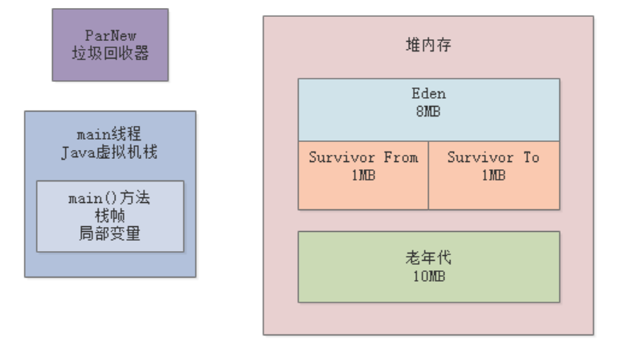
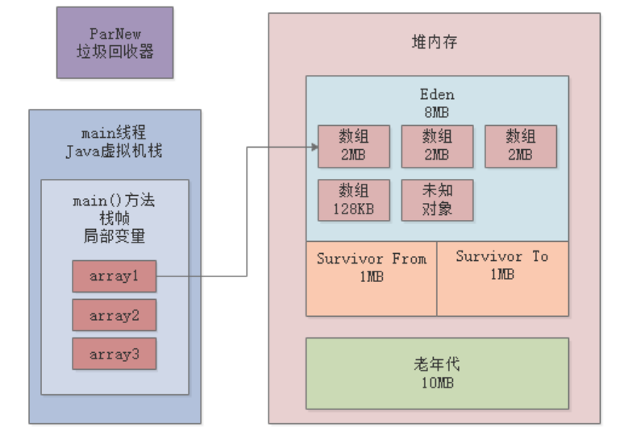
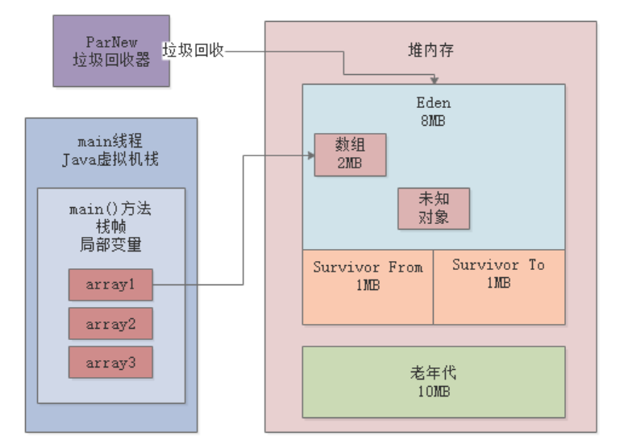
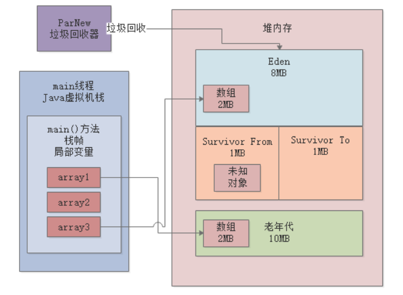

上一章，我们已经进行了一次Young GC日志的分析，本章我们继续结合代码示例做实验，来看看对象是如何从新生代进入老年代的。我们之前讲过新生代对象晋升到老年代的几种场景：
本章，我们通过示例代码模拟最常见的一种场景——Young GC后存活对象放不进Survivor。
我们的示例程序基于JDK1.8，JVM参数如下：-XX:NewSize=10485760 -XX:MaxNewSize=10485760 -XX:InitialHeapSize=20971520 -XX:MaxHeapSize=20971520 -XX:SurvivorRatio=8 -XX:MaxTenuringThreshold=15 -XX:PretenureSizeThreshold=10485760 -XX:+UseParNewGC -XX:+UseConcMarkSweepGC -XX:+PrintGCDetails -XX:+PrintGCTimeStamps -Xloggc:gc.log
上述给新生代分配了10MB空间，老年代也是10MB，参数注意两点：

示例程序代码如下：
public class Demo1 {
public static void main(String[] args) {
byte[] array1 = new byte[2 * 1024 * 1024];
array1 = new byte[2 * 1024 * 1024];
array1 = new byte[2 * 1024 * 1024];
byte[] array2 = new byte[128 * 1024];
array2 = null;
byte[] array3 = new byte[2 * 1024 * 1024];
}
}
我们根据上述代码来分析下内存中的对象分配。首先连续创建了三个2MB的数组对象，将array1指向最后一个数组对象，然后创建了一个128KB的数组，将array2赋null：

注意，Eden区里会有一些“未知对象”，根据模拟Young GC一文中的分析，对象大小在500KB左右，我们后续会通过工具分析这些“未知对象”到底是什么。
然后，执行代码byte[] array3 = new byte[2 * 1024 * 1024]，希望在Eden区继续创建一个2MB的数组。显然，Eden区的空间不足了，此时就会触发Young GC。
我们执行程序，得到以下GC日志：
0.352: [GC (Allocation Failure) 0.353: [ParNew: 8106K->623K(9216K), 0.0021991 secs] 8106K->2673K(19456K), 0.0033689 secs] [Times: user=0.00 sys=0.00, real=0.00 secs]
Heap
par new generation total 9216K, used 2837K [0x00000000fec00000, 0x00000000ff600000, 0x00000000ff600000)
eden space 8192K, 27% used [0x00000000fec00000, 0x00000000fee297c0, 0x00000000ff400000)
from space 1024K, 60% used [0x00000000ff500000, 0x00000000ff59be50, 0x00000000ff600000)
to space 1024K, 0% used [0x00000000ff400000, 0x00000000ff400000, 0x00000000ff500000)
concurrent mark-sweep generation total 10240K, used 2050K [0x00000000ff600000, 0x0000000100000000, 0x0000000100000000)
Metaspace used 3147K, capacity 4496K, committed 4864K, reserved 1056768K
class space used 343K, capacity 388K, committed 512K, reserved 1048576K
我们先来看下日志中的下面这行，这是本次GC情况的概要说明：
0.352: [GC (Allocation Failure) 0.353: [ParNew: 8106K->623K(9216K), 0.0021991 secs] 8106K->2673K(19456K), 0.0033689 secs] [Times: user=0.00 sys=0.00, real=0.00 secs]
ParNew: 8106K->623K(9216K)：可以看到，本次Young GC后，新生代只剩下了623KB（未知对象）。但是明明array1还引用着一个2MB的数组：

我们注意下Survivor的大小，只有1MB，是容纳不下2MB数组和未知对象的。根据“Young GC后存活对象放不进Survivor会进入老年代”规则，ParNew会将2MB数组转移到老年代，未知对象转移到Survivor：

通过观察GC日志，也印证了这一点：
from space 1024K, 60% used：Survivor中有600多KB的数据，就是未知对象；
concurrent mark-sweep generation total 10240K, used 2050K：老年代中的2MB对象就是array3引用的数组对象。
本章通过GC日志分析了一种新生代对象进入老年代的示例，即Young GC后存活对象放不进Survivor，则会进行老年代。
需要注意的是，并不是所有存活对象都会进入老年代，可能会有部分对象留在Survivor区，部分对象进入老年代。